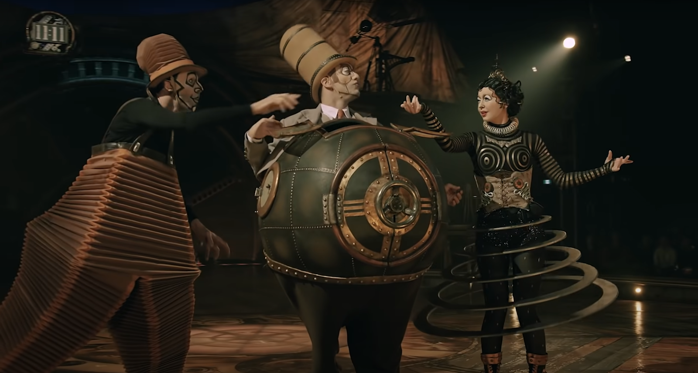
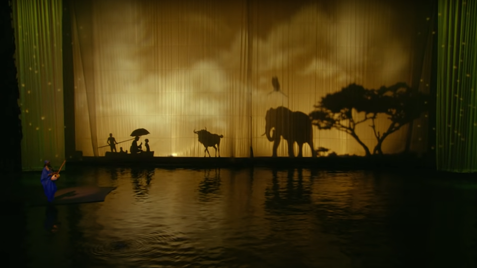

Performer in KURIOS - Cabinet of Curiosities
It's not often a show could engross your attention every second of the way. And yet, Cirque du Soleil accomplishes that in a way the human mind cannot comprehend, completely redefining the term 'jaw-dropping'. So what exactly makes this show so riveting? Perhaps it was the daring stunts, or the impeccable music. Perhaps it was the excellent lighting, used to convey a deeper meaning. Or perhaps, it was simply the brilliance of the story that makes it so entertaining.
Last night's showing was a condensed version of three separate Cirque du Soleil shows, each visually and aesthetically different. KURIOS - Cabinet of Curiosities, following an inventor from the 19th century as he bends the laws of physics to reimagine himself in a steampunk dimension - “O”, a magnificent tale of water and beauty - and finally LUZIA, a dive into Mexican culture.
If there's one thing this show played to perfection, it was the flawless comedic timing, specifically during KURIOS - Cabinet of Curiosities. I found myself laughing at certain acts, like The Comic, intelligently portrayed by the genius Facundo Gimenez. His interpretation of a cat didn't just have me cackling, but also the rest of the audience. The soundtrack throughout KURIOS also invoked a playful feeling, allowing the audience to feel like they're going along for the ride, and the stylistic makeup which blended the actors into the setting. With its ravishing props and bizarre costumes, KURIOS is an intricate masterpiece.
KURIOS - Exquisite props that affected the overall mood in a positive way.
Another excellent reason why this production is so highly regarded is because of how everything blends together, to create one seamless performance - and that is exactly what “O” managed. “O”, pronounced eau (French for water), showcased a play so distinct, your eyes were literally glued onto the stage. Its success was completely dependent on the set design; because the show is entirely aquatic based, the stunts seen were extremely unique, almost always involving water. The superb lighting tricks to show brilliant images on the curtains was a highlight, most notably with the yellow curtain, contrasting with the black silhouettes creating a scenery so cinematic you would think it was from a movie.
O - Incredible black silhouette effect using clever lighting
Lastly, I must point out the incredible costuming worn and special effects during the fire display, with the material allowing the fire to burn for a long period of time without harming the actor.
Finally, we have the LUZIA performance, implementing the rich Mexican culture through its makeup, attire, and performances.
Throughout all of this, the consistent synchronization and wonderful soundtrack enriches their performances tenfold. The makeup throughout stood out to me, with its specific palette suited for the story. Cirque du Soleil's exemplary performances are what all theaters should aspire to be like, and while in these unprecedented times nothing is for certain, I know I'll be going back for a second heaping bowl of Cirque du Soleil.
Verdict: